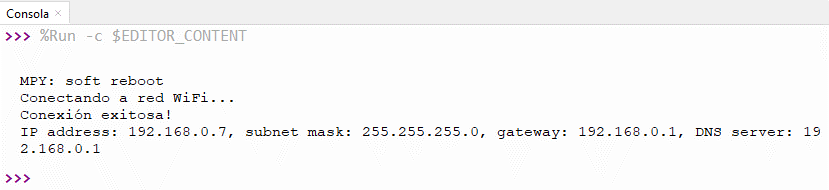
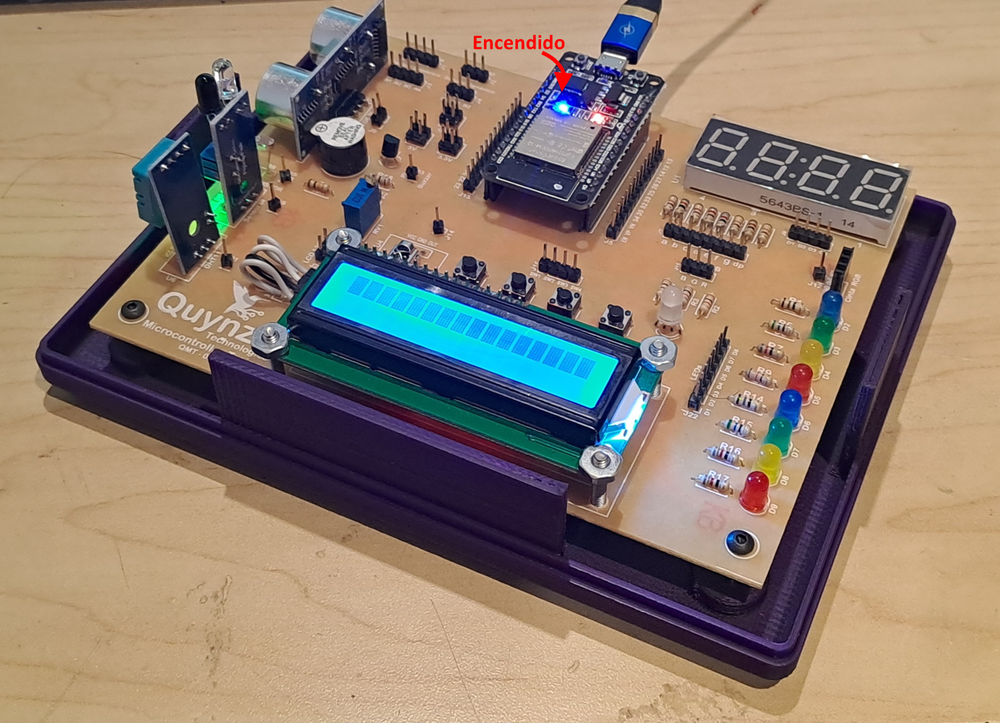

Ejercicio 3-2: Conectarse a red WiFi
Descripción
Usando Micropython, con el Ejercicio 3-2: Conectarse a red WiFi se va a aprender a conectar al ESP32 a una red WiFi disponible y cuando se realice una conexión exitosa entonces se encenderá el LED conectado a la placa ESP32.
Para este ejercicio se necesita el Entrenador ESP32, ¡el cual puede ser adquirido en este link al mejor precio!

Código
Para este ejercicio se necesitará el archivo:
- main.py: Script principal que contiene el código para conexión a una red WiFi específica.
main.py
Luego de confirmar que la red WiFi deseada para conectar ha sido correctamente detectada por el ESP32 con el Ejercicio 3-1: Visualizar lista redes WiFi se debe crear el archivo main.py que contiene el siguiente código:
import network from machine import Pin p2 = Pin(2,Pin.OUT) def do_connect(ssid,pwd): wlan = network.WLAN(network.STA_IF) wlan.active(False) wlan.active(True) if not wlan.isconnected(): p2.off() print('Conectando a red WiFi...') wlan.connect(ssid, pwd) while not wlan.isconnected(): pass p2.on() print('Conexión exitosa!') config = wlan.ifconfig() print("IP address: " + config[0] + ", subnet mask: "+ config[1] + ", gateway: " + config[2] + ", DNS server: " + config[3]) do_connect("XXX","YYY")
Donde "XXX" es el nombre de su red WiFi y "YYY" es la contraseña de su red.
Explicación paso a paso
main.py
En primer lugar importamos la librería network y la clase machine.Pin. La clase Pin es usado para controlar los pines GPIO (General-purpose Input-Output) del ESP32:
import network from machine import Pin
Luego un objeto llamado p2 con clase Pin, el cual se va a vincular con el GPIO2 del ESP32 con una configuración en modo salida (Pin.OUT). Para las tarjetas ESP32, el GPIO2 está conectado al LED interno:
p2 = Pin(2,Pin.OUT)
Se prosigue creando una función llamada do_connect que recibe 2 parámetros de entrada: ssid, que corresponde a SSID de la red WiFi a conectarse y pwd, que corresponde a la contraseña de la red WiFi. Luego se configura al ESP32 en el modo Estación WiFi y aseguramos que esté activada:
def do_connect(ssid,pwd): wlan = network.WLAN(network.STA_IF) wlan.active(False) wlan.active(True)
Si el ESP32 no está conectado a ninguna red, entonces se apaga el LED interno del ESP32 y se procede a intentar conectar a la red WiFi con SSID: ssid y Contraseña: pwd. Mientras no se haga la conexión de manera exitosa, el ESP32 queda en espera, cuando se conecte entonces se enciende el LED interno y se muestra en consola la información de la conexión:
if not wlan.isconnected():
p2.off()
print('Conectando a red WiFi...')
wlan.connect(ssid, pwd)
while not wlan.isconnected():
pass
p2.on()
print('Conexión exitosa!')
config = wlan.ifconfig()
print("IP address: " + config[0] + ", subnet mask: "+ config[1] + ", gateway: " + config[2] + ", DNS server: " + config[3])
La clase WLAN tiene una función llamada ifconfig el cual retorna/configura los parámetros a nivel IP de la red conectada. Estos parámetros están organizados en una tupla de tamaño 4 con la siguiente información:
- Dirección IP de dispositivo en la red
- Máscara de subred
- Dirección Gateway de la red
- Dirección del servidor DNS
Luego de definir la función do_connect, la llamamos con la información de la red WiFi disponible a conectar:
do_connect("XXX","YYY")
Testeo en ESP32
Primero, se realiza la conexión del ESP32 a nuestro ordenador mediante USB:

Luego ejecutamos el script main.py mediante el software Thonny. Después de unos segundos, en consola se va mostrar un mensaje como este:

Y el entrenador se podrá ver de esta manera:
